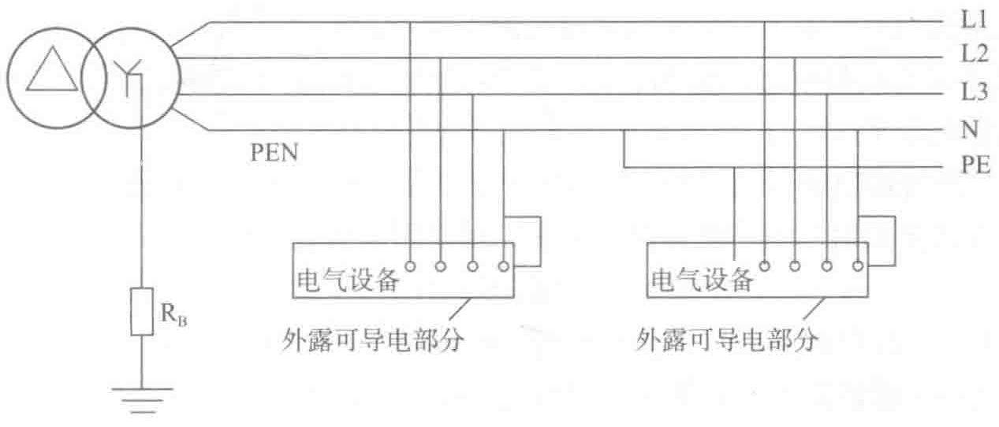
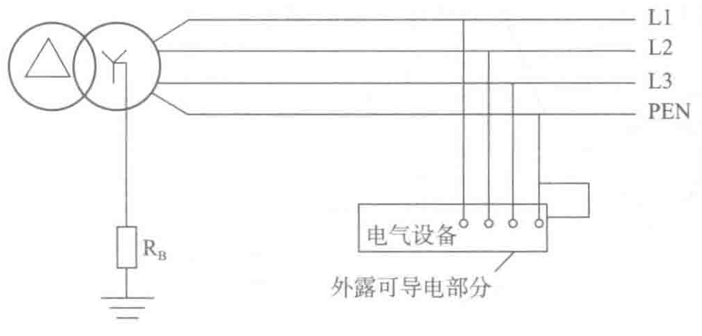

3）TN-C系统定义
系统电源端（变压器或发电机的中性点）直接接地，并与电气设备的保护地线连接，如图2-19所示。TN-C系统中，保护线和中性线合称为PEN线。此系统易于实现，节省了一根导线，降低系统初期投资费用。发生接地短路故障时，故障电流大，系统中的过电流保护电器可瞬时切断电源，保证人员生命和财产安全。当线路中有单相负载、三相负载不平衡及电网中有谐波电流时，电气设备的外壳和线路金属套管间有压降，干扰敏感性电子设备。PEN线断线或相线对地短路时，会呈现相当高的故障电压，可能扩大事故范围，同时不能使用剩余电流保护装置RCD保护（由于检测不出漏电电流，RCD会拒动），发生绝缘故障时，不能有效地对人身和设备进行保护。

4）TN系统防电击自动切断电源的条件
TN系统发生接地故障时，其故障电流通过回路的PE线金属通路返回电源，故障点电流幅值较大。可能有三种不同情况出现：一是故障处两个相接触的金属部分因通过大幅值故障电流熔化成团而缩回，从而脱离接触，接地故障自然消失而不引发事故；二是两金属部分虽脱离接触但却建立了大阻抗的电弧，相当大一部分的电压降落在电弧上，PE线上电压降形成的接触电压往往不足以引起电击事故，其电气危险常表现为接地电弧引燃起火；三是两金属部分熔化后焊牢，成为故障点阻抗可忽略不计的故障，因故障电流大，过电流